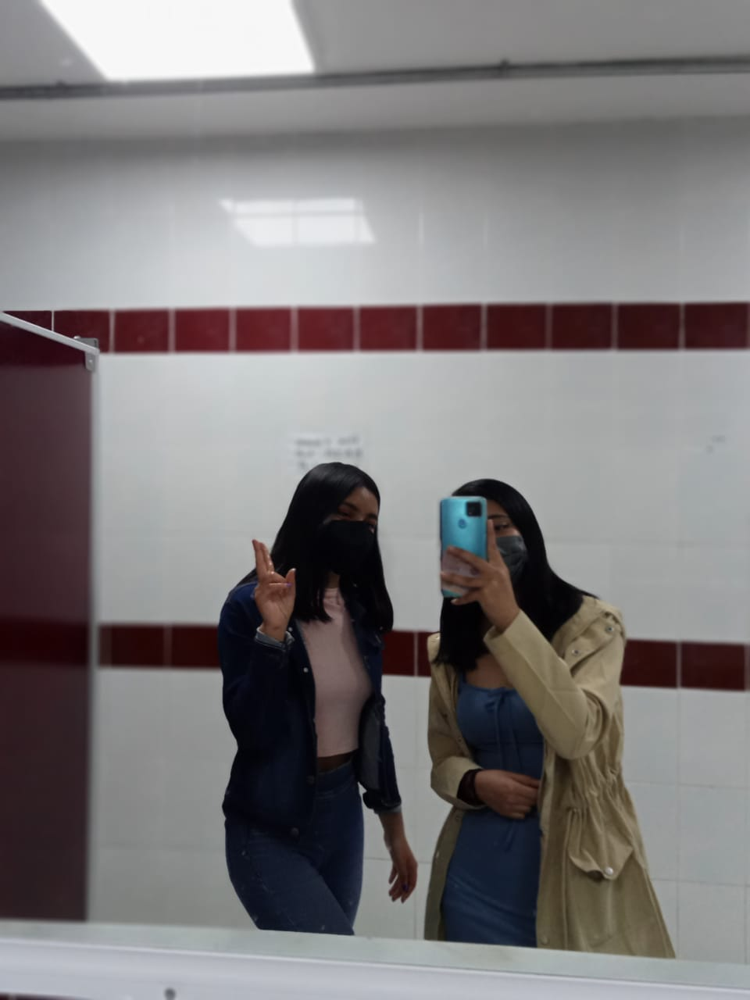

Nos conocimos exactamente en otro momento cuando estaba con Angy y nos animamos a hablarte por primera vez y ya de ahí no nos hablamos hasta que un día Leonardo fue al salón y se acerco con nosotras y ahí ya fue cuando nos empezamos a juntar, ese día estuvimos juntas y empezamos a hablar y nos empezamos a conocer, al siguiente día que fue martes y habíamos terminado computación y nosotras habíamos pensado en saltarnos la clase de Filosofía porque nos daba mucha hueva entrar pero ya al instante nos daba miedo hasta que salimos y vimos a Leonardo y fue cuando nos animamos a saltarnos la clase y fuimos corriendo por nuestras mochilas y ya ahí estuvimos una hora con Leonardo y fuimos al baño y ahí en el baño fue nuestra segunda foto en el espejo y ya a partir de ahí siempre hemos estado juntas, fue muy bonito como se forma nuestra hermosa amistad, gracias a ciertas personas nos volvimos inseparables, siempre estuvimos juntas hasta el ultimo dia, nunca olvidare la hermosa amistad que tenemos, nuestra amistad es muy fuerte y nada ni nadie nos va a separar siempre estaremos juntas hasta donde se pueda, siempre vas a poder contar conmigo y siempre estaré para ti en las buenas, en las malas y en las peores, ese dia que nos pudimos conocer y que empezamos a interactuar fue el mejor dia porque encontre una verdadera amistad a tu lado, contigo encontre lo que es una verdadera amistad y fuiste y seras una gran amistad del cecyt no sabes como me sentia a tu lado, me sentia segura a tu lado y gracias por toda la confianza que me diste y gracias por estar siempre a mi lado, no olvidare nunca esese dia, Ti amo mucho nunca lo olvides, aqui tendras una amiga en quien confiar, te amo <3.